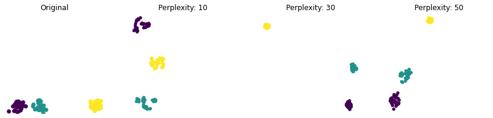

In this blog post we will look into inner workings of the t-SNE algorithm, to clearly understand how it works, what it could be used for and what are its limitations. I will take a top-to-bottom approach first explaining more generally how the algorithm works on a higher level and then dive deeper into the mathematics behind it. The article contains code blocks in most places where there are equations or calculations, as some people have an easier time understanding concepts through code than maths. The entire post is also a notebook and can be downloaded.
Introduction
t-SNE is an algorithm used to visualise high-dimensional data. Because we can’t visualise anything that has more than two - perhaps three - dimensions, t-SNE does this by reducing the number of dimensions in the data. It does this while preserving the structure of the data as much as possible. If we compare t-SNE to PCA we see that PCA tries to preserve the information in the data, while t-SNE would try to preserve the relative distances and the clustering structure in the data, therefore with less regard to the total preserved information.
1
2
3
import matplotlib.pyplot as plt
import numpy as np
import warnings
General Procedure
As the aim is to reduce the dimensionality of the data, let’s start with a simple example and try to see how reducing two dimensional data to one dimension would look like.
As you can see the output of the algorithm is not just a projection to the x axis, it transforms the dimensions such that the correlation between similar and dissimilar data is kept as much as possible.
If you take a look at the GIF below you can see how this procedure happens. At each iteration of the algorithm, similar data-points are pulled together, and dissimilar points are pushed apart. This means that with enough iterations the algorithm should cluster the points in a similar way to their natural structure.
The Maths
Now let’s look at how the algorithm actually works and the maths behind it. First of all we need to be able to determine if a pair of data points are similar. To do this we first calculate the euclidean distance between every pair of points.
1
2
def pairwise_distances(X):
return np.sum((X[None, :] - X[:, None])**2, 2)
Then, we go through the following procedure to calculate the similarities: For each data-point we place it in the middle of a Gaussian curve and the rest of the data along the rest of the curve, according to their distances. This means that points closer to the middle are similar to the chosen one, while the ones on the edges are very different.
This is reflected by the following formula which basically is normalized Gaussian distribution;
\[p_{j|i} = \frac{exp(-||x_i - x_j||^2/2\sigma^2_i)}{\sum_{k\neq i}exp(-||x_i - x_k||^2/2\sigma^2_i)}\]1
2
3
4
5
def p_conditional(dists, sigmas):
e = np.exp(-dists / (2 * np.square(sigmas.reshape((-1,1)))))
np.fill_diagonal(e, 0.)
e += 1e-8
return e / e.sum(axis=1).reshape([-1,1])
You may be wondering, how do we choose the \(\sigma\) (standard deviation)? This we do not choose directly, but by setting something called perplexity; which is defined by,
\[Perp(p) := 2^{-\sum_x p(x) \log_2 p(x)}\]1
2
3
def perp(condi_matr):
ent = -np.sum(condi_matr * np.log2(condi_matr), 1)
return 2 ** ent
Perplexity, basically, reflects our opinion of the density of the data. The best value for perplexity cannot really be calculated analytically. So, we usually need to try out different values and try to find the one that provides the best results. The best value for perplexity usually varies between 5 and 50.
With perplexity set by us, the sigmas corresponding to it are chosen by the algorithm, by doing binary search.
1
2
3
4
5
6
def find_sigmas(dists, perplexity):
found_sigmas = np.zeros(dists.shape[0])
for i in range(dists.shape[0]):
func = lambda sig: perp(p_conditional(dists[i:i+1, :], np.array([sig])))
found_sigmas[i] = search(func, perplexity)
return found_sigmas
1
2
3
4
5
6
7
8
9
10
11
12
13
14
15
def search(func, goal, tol=1e-10, max_iters=1000, lowb=1e-20, uppb=10000):
for _ in range(max_iters):
guess = (uppb + lowb) / 2.
val = func(guess)
if val > goal:
uppb = guess
else:
lowb = guess
if np.abs(val - goal) <= tol:
return guess
warnings.warn(f"\nSearch couldn't find goal, returning {guess} with value {val}")
return guess
Now that we now how to find the similarities between the data in its original, high-dimensional state, we need to do the same for its low-dimensional representation. This way we will be able to make sure that data that is close together in its original structure is also close together in the projection.
This is a very similar procedure to the previous one the only difference being that instead of using a Gaussian distribution we will use a Student’s t-distribution, with one degree of freedom.
\[q_{ij} = \frac{(1 + ||y_i - y_j||^2)^{-1}}{\sum_{k \neq l}(1 + ||y_k - y_l||^2)^{-1}}\]This distribution is very similar to the Gaussian. It’s just a bit higher on the edges, which makes the middle a bit lower.
1
2
3
4
5
def q_joint(y):
dists = pairwise_distances(y)
nom = 1 / (1 + dists)
np.fill_diagonal(nom, 0.)
return nom / np.sum(np.sum(nom))
We now know how to calculate the similarities both in high and low dimensional space. Next, we will do the iteration process. This, will be done by steping and picking better and better representations of the data with each step using gradient descent.
But in order to be able to calculate the gradient, we need a cost function - meaning a way to check if the structure of the data in low dimensions represents the high-dimensional state accurately. Because we will basically be comparing two distributions, we use the Kullback–Leibler divergence for this.
I will not be showing the derivations to obtain the gradient here. If you are interested I suggest checking the Appendix in the original paper for this algorithm. If you go through the process the resulting gradient is the following;
\[\frac{\delta C}{\delta y_i} = 4\sum_j (p_{ij} - q_{ij}) (y_i - y_j) (1 + ||y_i + y_j||^2)^{-1}\]1
2
3
4
5
6
7
8
def gradient(P, Q, y):
(n, no_dims) = y.shape
pq_diff = P - Q
y_diff = np.expand_dims(y,1) - np.expand_dims(y,0)
dists = pairwise_distances(y)
aux = 1 / (1 + dists)
return 4 * (np.expand_dims(pq_diff, 2) * y_diff * np.expand_dims(aux,2)).sum(1)
With that, the gradient descent procedure is basically as usual. We will, however, use momentum here, to make the learning at the beginning a bit quicker. It is just a simple step function.
1
2
def m(t):
return 0.5 if t < 250 else 0.8
There is only one thing left that I haven’t told you yet. That is, what is called the crowding problem. The gist of this problem is that because we decrease the number of dimensions, the things that we are able to represent in these dimensions also decrease. To understand this, imagine a square where each of its edges is a data-point. Now try to represent these four points in a one dimensional space. You should see that there are a couple of combinations of results you will achieve, however none of them will feel right, because you cannot represent the fact that they all have equal distances to two other points. This basically is the crowding problem. To try to solve this problem, we set
\[p_{ij} = \frac{p_{j|i} + p_{i|j}}{2n}\]1
2
3
4
5
6
def p_joint(X, perp):
N = X.shape[0]
dists = pairwise_distances(X)
sigmas = find_sigmas(dists, perp)
p_cond = p_conditional(dists, sigmas)
return (p_cond + p_cond.T) / (2. * N)
Now we know everything to implement the t-SNE algorithm.
1
2
3
4
5
6
7
8
9
10
11
12
13
14
15
16
def tsne(X, ydim=2, T=1000, l=500, perp=30):
N = X.shape[0]
P = p_joint(X, perp)
Y = []
y = np.random.normal(loc=0.0, scale=1e-4, size=(N,ydim))
Y.append(y); Y.append(y)
for t in range(T):
Q = q_joint(Y[-1])
grad = gradient(P, Q, Y[-1])
y = Y[-1] - l*grad + m(t)*(Y[-1] - Y[-2])
Y.append(y)
if t % 10 == 0:
Q = np.maximum(Q, 1e-12)
return y
Results
We can quikly run it on the MNIST digits dataset, and see that it does cluster different digits in separate clusters, which is exactly what we would like to see.
1
2
3
4
5
from sklearn.datasets import load_digits
X, y = load_digits(return_X_y=True)
res = tsne(X, T=1000, l=200, perp=40)
plt.scatter(res[:, 0], res[:, 1], s=20, c=y)
plt.show()
But let’s now generate some data to check how it works on different structures. I will generate data of only 2 dimensions and run on t-SNE to obtain a representation with two dimensions. Although this practically wouldn’t make sense, I do it here so we are be able to visualise the results and have an easier time examining them.
First, different distances. If you look at the results below, you can see that the distances between clusters are not preserved for all the results. This, shows the importance of choosing the correct perplexity to keep the original structure as much as possible.
1
2
3
4
5
6
7
8
9
10
11
12
13
14
15
16
def plot2d(data, labels, perps=[30], iters=400):
np.random.seed(123)
f, axs = plt.subplots(1, len(perps)+1, figsize=(12,24))
f.tight_layout()
axs[0].axis('off')
axs[0].scatter(data[:, 0], data[:, 1], c=labels)
axs[0].title.set_text('Original')
axs[0].axis('square')
for i, perp in enumerate(perps):
axs[i+1].axis('off')
res = tsne(data, T=iters, l=200, perp=perp)
axs[i+1].scatter(res[:, 0], res[:, 1], s=20, c=labels)
axs[i+1].title.set_text(f'Perplexity: {perp}')
axs[i+1].axis('square')
plt.show()
1
2
3
4
5
6
7
size = 30
d1 = np.random.multivariate_normal([-5, 0], [[2,0],[0,2]], size=size)
d2 = np.random.multivariate_normal([5, 0], [[2,0],[0,2]], size=size)
d3 = np.random.multivariate_normal([30, 0], [[2,0],[0,2]], size=size)
d = np.concatenate((d1, d2, d3), axis=0)
l = [0] * size + [1] * size + [2] * size
plot2d(d, l, perps=[10,30,50])

Next, we try clusters with different densities. Here, we see that the densities of the clusters created by t-SNE become about the same. The reason for this is that when we calculate the similarities we normalise the results. This causes the clusters to have similar sizes although it is not how the original data looks like.
1
2
3
4
5
6
size = 100
d1 = np.random.multivariate_normal([-8, 0], [[20,0],[0,20]], size=size)
d2 = np.random.multivariate_normal([8, 0], [[0.5,0],[0,0.5]], size=size)
d = np.concatenate((d1, d2), axis=0)
l = [0] * size + [1] * size
plot2d(d, l, perps=[30,60,100,120])
We can also see that the algoithm can distinguish a denser region inside a cluster as a different cluster, which is pretty impresive. Do note, however, that the perplexity set will change the results, so we do need to represent our knowledge of the data through the perplexity or try out different values to compare the results.
1
2
3
4
5
6
size = 100
d1 = np.random.multivariate_normal([0, 0], [[0.5,0],[0,0.5]], size=size)
d2 = np.random.multivariate_normal([0, 0], [[80,0],[0,80]], size=size)
d = np.concatenate((d1, d2), axis=0)
l = [0] * size + [1] * size
plot2d(d, l, perps=[100])
Lastly, one more example mostly because visually it looks really cool. Still, if you look at the result obtained by 50 perplexity you can see that the middle of the clusters is pushed out more, compared to the rest of the data-points. This is caused by the fact that these regions are more dense so the push-pull affects become greater.
If you are interested in seeing more examples of t-SNE’s results on different structures of data and its limits I suggest checking out distill.pub.
1
2
3
4
5
6
7
8
9
size = 60
xt = np.linspace(0,100,size)
d1 = xt * 0.5 + 30 + np.random.normal(0,2,size=size)
d2 = xt * 0.5 + 1 + np.random.normal(0,2,size=size)
d = np.concatenate((d1.reshape([-1,1]), d2.reshape([-1,1])), axis=0)
tmp = np.concatenate((xt.reshape([-1,1]),xt.reshape([-1,1])), axis=0)
d = np.concatenate((tmp, d), axis=1)
l = [0] * size + [1] * size
plot2d(d, l, perps=[30,50])
To close we can compare results obtained by t-SNE to PCA to clearly see that t-SNE aims to cluster the data and therefore makes the visualisations much more useful while trying to cluster the data.
1
2
3
4
5
6
7
8
9
10
11
12
13
14
15
16
17
18
19
20
21
22
23
24
25
from scipy.linalg import eigh
from sklearn.preprocessing import StandardScaler
def pca(high_dimesion_data):
#find the co-variance matrix which is : A^T * A
sample_data = high_dimesion_data
# matrix multiplication using numpy
covar_matrix = np.matmul(sample_data.T , sample_data)
# this code generates only the top 2 (782 and 783)(index) eigenvalues.
_, vectors = eigh(covar_matrix, eigvals=(62,63))
return np.matmul(vectors.T, sample_data.T).T
scaler = StandardScaler()
X_scaled = scaler.fit_transform(X)
res = pca(X_scaled)
f, (ax1,ax2) = plt.subplots(1, 2, figsize=(20,10))
ax1.scatter(res[:, 0], res[:, 1], s=20, c=y)
ax1.title.set_text('PCA')
res = tsne(X_scaled, T=1000, l=200, perp=40)
ax2.scatter(res[:, 0], res[:, 1], s=20, c=y)
ax2.title.set_text('t-SNE')
plt.show()
Conclusion
We saw how t-SNE works through code. If you’d like to download the post as a notebook you can get it here. We also saw that t-SNE is useful for different purposes than PCA, although thay both reduce the dimensionality of the data, they do it in a very different way. For this reason the drawbacks that we saw should be carefully considered before using t-SNE.